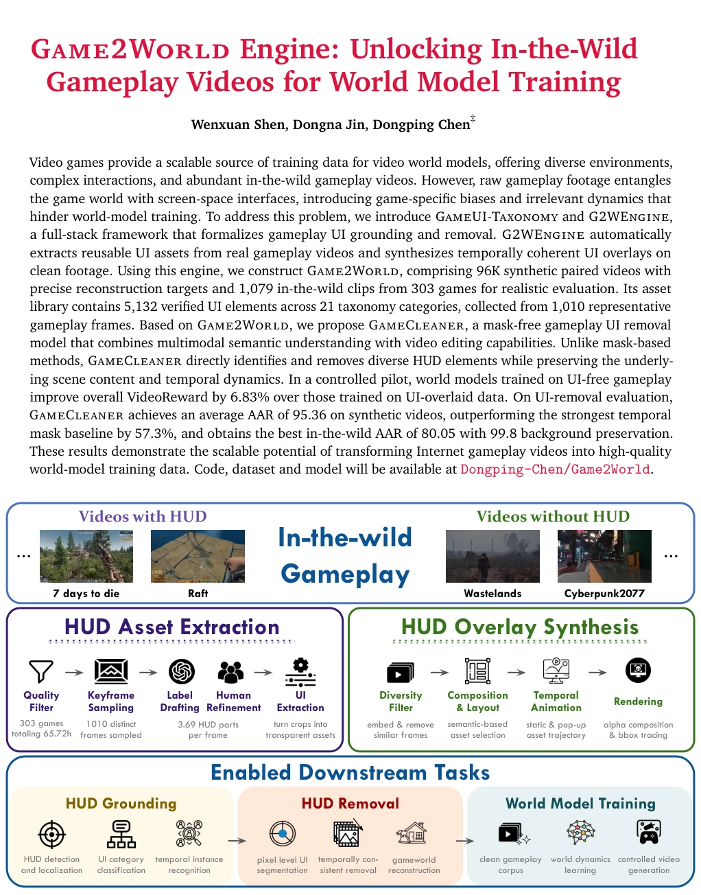
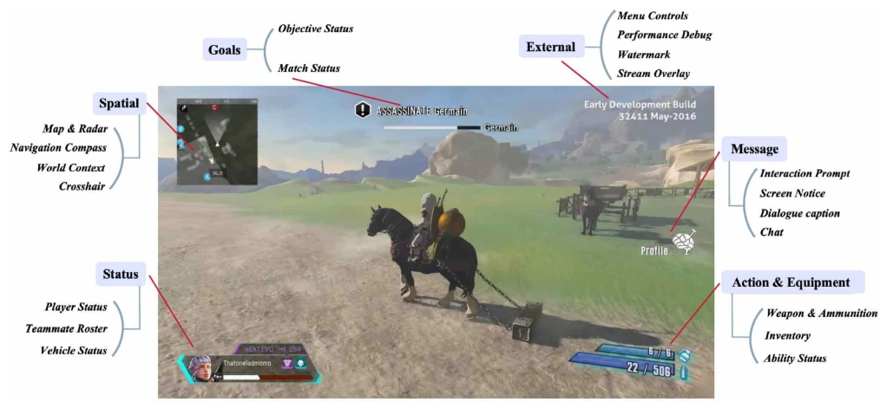
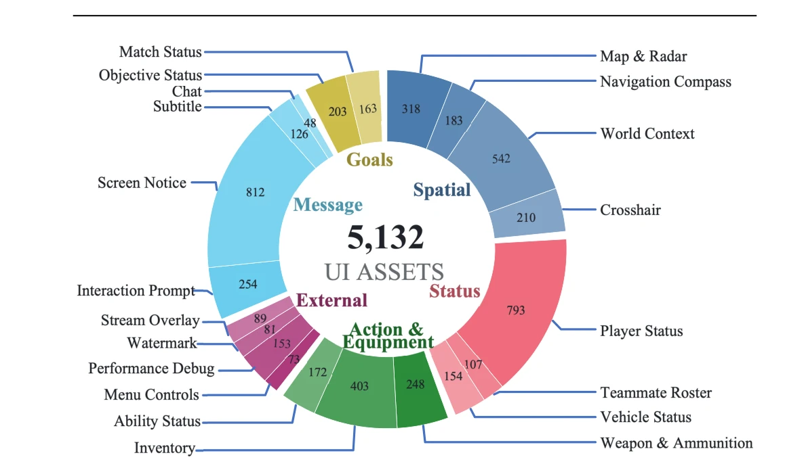
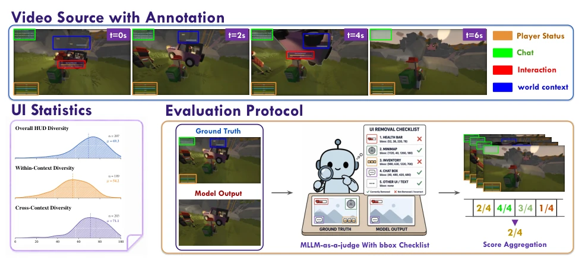
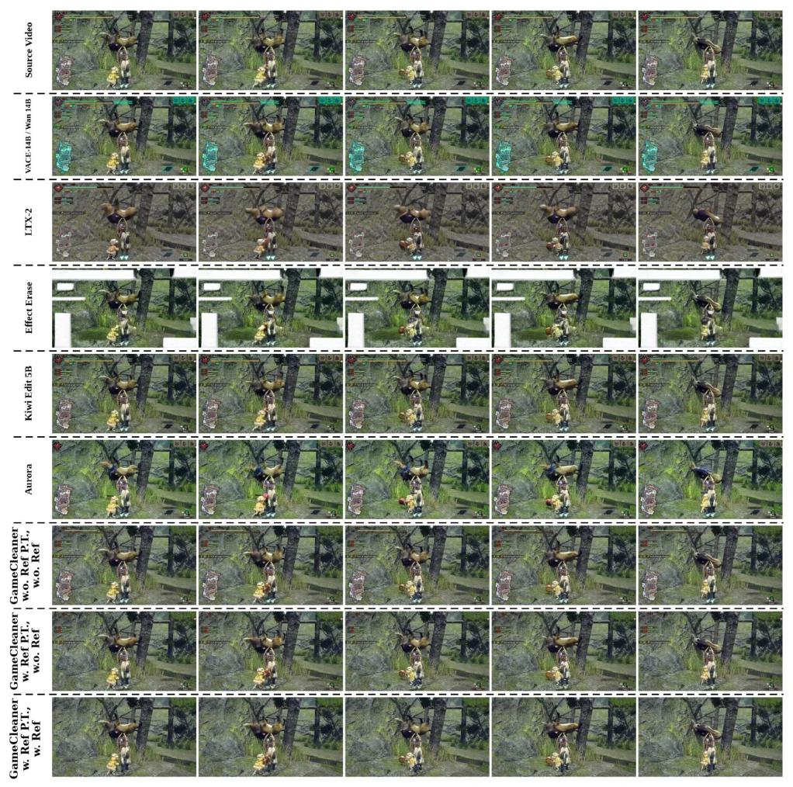
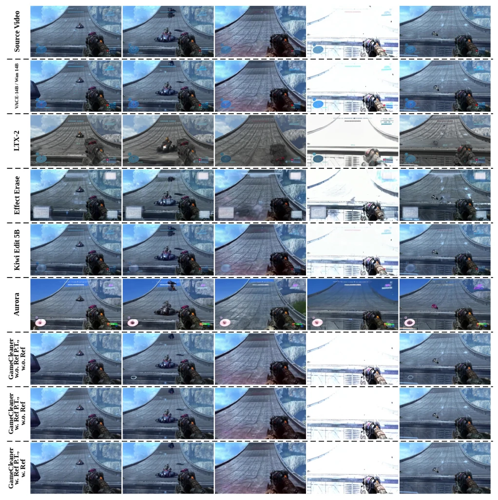
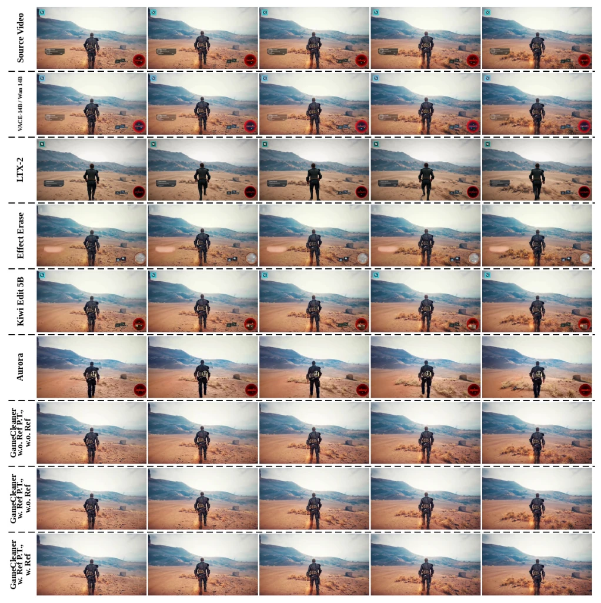
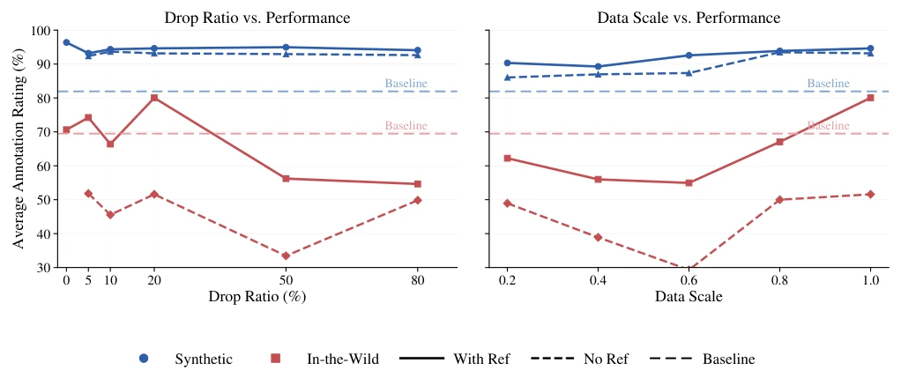

This paper accomplishes something very substantial: transforming "game recordings" full of UI into clean "world model training data". The authors keenly point out that previous world model research either relied on expensive closed simulators or directly used UI-laden recordings for practice, resulting in models learning "how to read health bars" instead of "how to understand the physical world". Game2World Engine acts like a ruthless "UI removal assembly line", stripping game interfaces cleanly. The GameCleaner model is even a master of "creating something from nothing", erasing HUD and completing backgrounds without drawing masks, with performance significantly outperforming existing baselines. However, there are also criticisms: this work is essentially "data cleaning" rather than "new algorithm breakthroughs", and relies on large amounts of synthetic data. Whether fully transparent, dynamically changing UIs in the real world (such as holographic projections in "Cyberpunk 2077") can be fully restored remains a question mark. Additionally, the authors equate "cleaning UI" directly to "improving world model performance". Although supported by experimental data, it ignores the action recovery link, after all, with only clean images but no action commands, the world model is still "blind". Overall, this is a beautiful "data engineering" victory, but there is still a distance from true embodied intelligence.
研究动机Motivation
世界模型（World Models）旨在通过视频学习环境动态，但高质量训练数据稀缺。现有方法主要依赖封闭仿真器（如Atari），成本高且泛化难；或者利用互联网上的游戏视频，但这些视频混杂了HUD、菜单、水印等屏幕空间界面（Kang and Choi, 2020; Wu et al., 2023）。这些非世界元素引入了与物理环境无关的偏差，导致模型学习错误的特征。之前的研究如Genie (Bruce et al., 2024) 虽利用无标签视频，但未分离UI与游戏内容。作者通过控制实验发现，在相同视频上，去除UI后训练的视频生成模型在VideoReward上提升了6.83%，运动质量提升18.8%。这证明现有工作直接利用含UI视频是“自欺欺人”，必须解决界面与世界的解耦问题，才能释放海量游戏视频的价值。
World Models aim to learn environmental dynamics through videos, but high-quality training data is scarce. Existing methods mainly rely on closed simulators (e.g., Atari), with high costs and difficult generalization; or utilize game videos on the internet, but these videos are mixed with screen-space interfaces such as HUD, menus, watermarks (Kang and Choi, 2020; Wu et al., 2023). These non-world elements introduce biases unrelated to the physical environment, causing models to learn incorrect features. Previous research like Genie (Bruce et al., 2024) utilized unlabeled videos but did not separate UI from game content. The authors found through control experiments that on the same videos, video generation models trained after removing UI improved by 6.83% in VideoReward and 18.8% in motion quality. This proves that existing work directly utilizing UI-containing videos is "self-deception". The decoupling problem of interface and world must be solved to release the value of massive game videos.

Figure 1: Overview of G2WEngine, a scalable data engine that transforms in-the-wild gameplay videos into world- model-ready data through HUD asset extraction, temporally coherent UI synthesis, and downstream support for HUD understanding, removal, and clean gameplay generation.
The overall process is divided into two major parts: data engine construction and model training. First, GameUI-Taxonomy is proposed, classifying game UI by function (e.g., status, map, message) and rendering behavior. Next, G2WEngine executes four steps: 1) Extract UI assets from real videos and convert to transparent layers; 2) Clean videos to remove original UI; 3) Synthesize paired videos with UI, simulating real interface layouts and dynamics; 4) Construct the Game2World dataset. The core innovation lies in "interface-world decoupling": treating UI removal as a semantic understanding task rather than simple image inpainting. The model GameCleaner adopts a mask-free architecture, combining Multimodal Large Language Model (MLLM) encoder and Video Diffusion Transformer (DiT). MLLM is responsible for understanding UI semantics in videos and localization, DiT is responsible for generating clean backgrounds based on semantic conditions. During training, the model directly inputs UI-containing videos and text instructions, without requiring manually annotated masks, learning to recover clean videos from noisy latent spaces via Flow Matching objectives. This design enables it to generalize to unseen game interfaces and maintain temporal consistency.

Figure 2: Overview of GameUI-Taxonomy, which organizes gameplay HUD elements into categories based on their functional roles and rendering behaviors, including spatial information, player status, goals, messages, actions, and external overlays.

Figure 4: Statistics of the Game2World UI asset taxonomy.
Two subsets were constructed: Game2World-S (96,000 pairs of synthetic videos, containing precise Ground Truth) and Game2World-W (1079 real game videos, no reference). Evaluation metrics include AAR (Artificial Adjustment Removal Rate), UI removal rate, Clean removal rate, and background retention rate (BG). Baselines include VACE, EffectErase, Kiwi-Edit, etc. Results show that GameCleaner achieved 95.36% AAR on the synthetic set, with 99.00% background retention rate, far exceeding LoomVideo (AAR 42.82) and EffectErase (AAR 56.17). On the real set, GameCleaner (w. Ref) achieved 80.05 AAR, with 99.80% background retention rate, significantly better than Aurora (AAR 51.19). Ablation studies show that increasing data diversity is crucial for real set generalization, and a 20% reference image drop rate can balance performance with/without reference. Consistency between MLLM as evaluator (Judge) and manual annotation (Cohen's κ=0.820) verifies evaluation reliability.

Figure 3: Overview of the Game2World-W dataset. The dataset provides temporally annotated in-the-wild gameplay videos, and evaluates UI removal through an MLLM-as-a-judge protocol with element-level bounding-box checklists.

Figure 6: Qualitative study for UI removal. GameCleaner w. reference image substantially reduces UI overlay while faithfully retaining the original video content. Frame and box level evaluation case study are provided in the Appendix.

Figure 7: Qualitative study of the in-the-wild subset.

Figure 8: Qualitative study of the synthetic subset.

Figure 9: Ablation study of data scaling and reference drop ratio during training. We find out that larger and more diverse dataset show generalizable result on in-the-wild evaluation and have not converge yet.